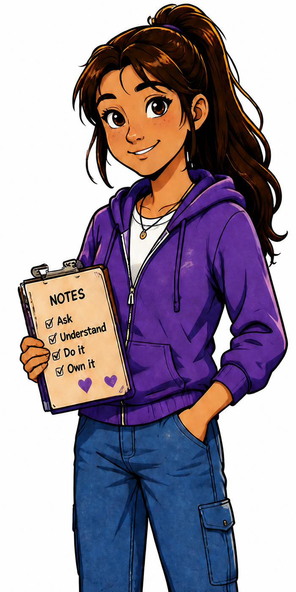

What Maya brings
- Plans before a small problem becomes a large one.
- Asks clear questions and listens carefully.
- Shows that preparation can be calm and practical.

Meet the Crew
Always one step ahead.
Curious, thoughtful, and practical. Maya likes to understand the situation, make a plan, and help everyone feel ready.
“Let's figure it out before we leave.”
First appearance: Adventure 2 — Zoo Day
A good plan builds confidence, but she is also learning that not every situation can be predicted in advance.
She helps Alex organize what he is learning, gives Tyler's energy direction, and values Emma's attention to safety.